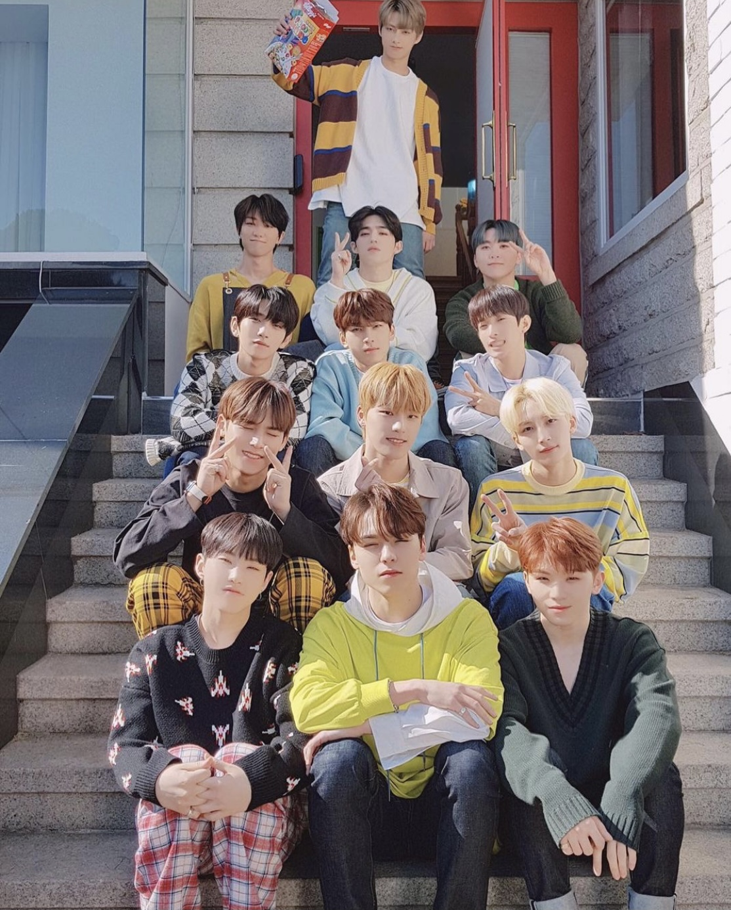

- HOSHI
- S.COUPS
- THE 8
SEVENTEEN
SAY THE NAME, SEVENTEEN! 안녕하세요, 세븐틴입니다!

기본적인 콘셉트의 틀을 "청량함"으로 잡고 있는 대표적인 그룹이다. 데뷔 곡 '아낀다'부터 네 번째 타이틀 곡 '아주 NICE'까지 청량한 콘셉트로 큰 사랑을 받았고, 2016년 말 '붐붐'부터 2017년 말 '박수', 2019년 중순 '독' 등의 강한 곡으로 이따끔씩 콘셉트 변화를 보이기도 한다. 다만 청량 콘셉트를 아예 버린 것은 아니다. 다시 한번 청량한 컨셉을 시도한 2018년 여름, 타이틀 곡 '어쩌나'가 큰 호평을 받으며 아이돌 팬들 사이에서 "역시 세븐틴은 청량 전공이다. 청량 맛집이다."라는 농담이 나오기도 했다. 이는 프로듀싱을 맡고 있는 멤버 우지가 "세븐틴의 가장 자연스러운 모습을 보여 주고 싶었다."라는 생각으로 앨범을 작업하는 것과 일맥상통하는 부분이며, 때문에 매 앨범은 멤버들의 긴 회의를 통해 세븐틴을 가장 잘 보여 줄 수 있는 모습, 세븐틴이 가장 보여 주고 싶은 모습에 맞춰 제작된다.